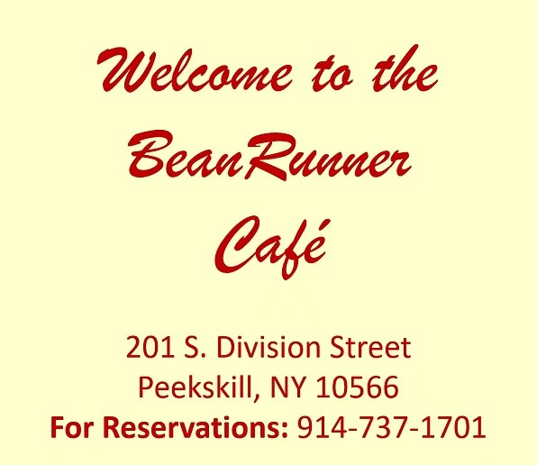

Our Story
A Cafe With a Soul


The Origin
Ted & Drew's
Lifelong Dream
The BeanRunner Café is the answer to Ted Bitter's and Drew Claxton's lifelong dreams — Ted wanted to create a neighborhood café, and Drew wanted to restore historic buildings. Together, they did both.
The couple purchased an old, abandoned building in 2001, undertook a historic restoration, landmarked the building, and opened the Café in 2008. The building, built circa 1850, was originally a wagon repair and blacksmith shop. In the 1950s it was Gardineer's Hardware and Stove Shop, then operated as one of Peekskill's many hairnet factories well into the 1990s.
By 2001 it was a phantom building — covered in stucco, painted grey, almost no one even knew it was there. But as Drew still says, "When I saw it I knew, it was a building with a soul."
"I had grown up in Kingston Jamaica, in one of those houses where everyone gathered."
— Ted Bitter, Founder
At 16, Ted immigrated to the U.S., joined the Army, and served in Vietnam. He spent the next 30 years frequenting cafes in Brooklyn and Greenwich Village — looking for that sense of community, and thinking about how to create it. Since 2008, BeanRunner has grown into one of the premier jazz and live music venues in Westchester County, beloved by musicians and audiences alike, with rotating art exhibits and a small family room where children can come and play.


Come visit us in Peekskill
201 S. Division Street · Open daily · Live music every Friday & Saturday